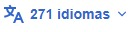

|
Perú

Etimología
> Historia
> Gobierno y política
> Organización territorial
> Geografía
> Economía
> Infraestructura
> Demografía
> Cultura
> Deporte
> Véase también
> Notas
> Referencias
> Bibliografía
> Enlaces externos
El Perú, oficialmente República del Perú [a] (en quechua: Piruw Ripuwlika y en aimara: Piruwxa Ripuwlika), es un Estado soberano ubicado en el oeste de América del Sur. Limita al norte, con Ecuador y Colombia; al este, con Brasil y Bolivia; al sur, con Chile; y al oeste, con el océano Pacífico, que bordea sus 2250 km de costa.[12] Su territorio se compone de diversos paisajes: los valles, las mesetas y las altas cumbres de los Andes se despliegan al oeste hacia la costa desértica y el este hacia la Amazonia. Es uno de los países con mayor diversidad biológica y mayores recursos minerales del mundo.[13][14]
Contenidos El territorio del Perú es una región que albergó sucesivas civilizaciones andinas desde el surgimiento de Caral-Supe en el 3200 a. C.[15] El Imperio incaico fue el último Estado indígena, dominando gran parte del occidente sudamericano hacia el siglo XV. En el siglo siguiente se produjo la conquista del Imperio incaico, tras la cual el territorio se configuró como Virreinato del Perú, pasando a formar parte del Imperio español. La formación del orden virreinal produjo una profunda transformación de estas sociedades mediante el mestizaje, un proceso que ha definido la conformación de la sociedad peruana como mestiza.[16] Con los Austrias la población indígena y la esclavizada de origen africano se empleó sistemáticamente en la conquista, la extracción de plata y oro mediante sistemas como la mita, o como fuerza laboral en las haciendas. Se fundaron universidades, como la Universidad Nacional Mayor de San Marcos de Lima en 1551, la primera y más antigua universidad del Nuevo Mundo en el continente.[17] Se elaboró la recopilación española de la gramática de la Lengua Quechua realizada por Domingo de Santo Tomás en el año 1560. Las reformas borbónicas del siglo XVIII buscaron racionalizar los recursos, pero fragmentaron el virreinato que abarcaba gran parte de América del Sur, y sus nuevas cargas fiscales desembocaron en la rebelión de Túpac Amaru II La independencia del Perú tuvo lugar durante las guerras de independencia hispanoamericanas. El Estado peruano se proclamó formalmente el 28 de julio de 1821 por José de San Martín y se consolidó tras la batalla de Ayacucho y el rechazo al proyecto federativo impulsado por Simón Bolívar. El repliegue de las fuerzas de Gran Colombia se completó a principios de 1827, y el mando de la plaza del Callao fue entregado oficialmente al Perú el 16 de febrero de 1827. Con este acto, el Perú
|
República del Perú
Piruw Ripuwlika (quechua) Piruwxa Ripuwlika (aimara) |
||
|
||
| Lema: «Firme y feliz por la unión» | ||
|
Himno: Himno Nacional del Perú
¿Problemas al reproducir este archivo? |
||

|
||
| Capital |


⏺️ Estándar
⚪ Grande
Anchura
⏺️ Estándar
⚪ Ancho
Color (beta)
⚪ Automático
⏺️ Claro
⚪ Oscuro